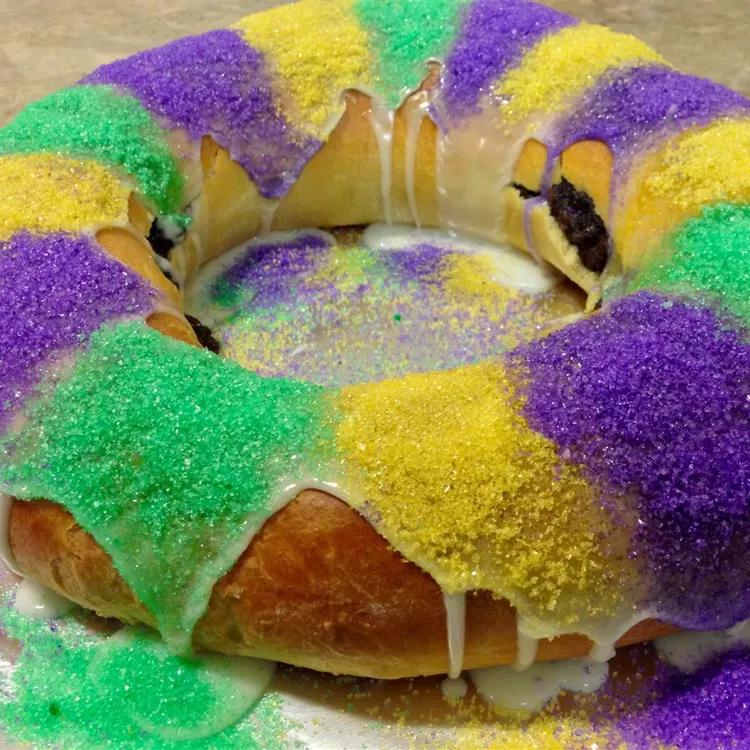

Buttermilk King Cake

Description
This recipe for king cake with cream cheese filling is, hands down, the best I've ever eaten. It's a combination of several recipes, not too sweet and not too bready, with a rich, tender crumb and the traditional lemon and nutmeg flavors of a genuine NOLA king cake. It's great with coffee and best eaten the same day but pretty darn good the day after (if there are leftovers!). Enjoy, y'all!
Ingredients
Sweet Dough
- 4 cups all-purpose flour, or more if needed
- ½ cup white sugar
- 1 (.25 ounce) package rapid rise yeast
- 1 ¼ teaspoons salt
- 3 eggs at room temperature
- 6 tablespoons butter
- ¾ cup Bulgarian-style buttermilk
- 1 (8 ounce) package cream cheese at room temperature
- 1 cup confectioners' sugar
Cream cheese Filling
- 1 (8 ounce) package cream cheese at room temperature
- 1 cup confectioners' sugar
- 2 tablespoons all-purpose flour (Optional)
- 2 tablespoons lemon juice
- 1 teaspoon vanilla extract
- ¼ teaspoon ground nutmeg
Egg wash
Icing
- 1 cup confectioners' sugar
- 4 teaspoons corn syrup
- 4 teaspoons milk
- 1 teaspoon lemon juice, or as needed
Steps
- Make the dough: Mix flour, sugar, yeast, and salt together in the bowl of a stand mixer fitted with a dough hook. Whisk eggs in a separate bowl.
- Melt butter in a saucepan over low heat. Whisk in buttermilk and heat until an instant-read thermometer reads 120 degrees F (49 degrees C). Slowly pour buttermilk mixture into beaten eggs, whisking constantly; let cool to 110 degrees F (43 degrees C).
- Beat egg mixture into flour mixture on medium-low speed until a firm, elastic dough forms, about 10 minutes. If dough doesn't separate from the sides of the mixing bowl during kneading, beat in up to 1/4 cup more flour.
- Turn dough out onto a work surface and knead for 1 minute. Shape dough into a ball and place into a buttered bowl, turning dough to lightly coat all over with butter. Cover the bowl with plastic wrap and let rise in a warm place until doubled in volume, about 2 hours.
- Preheat the oven to 350 degrees F (175 degrees C). Butter the outside edge of an 8-inch cake pan.
- Make the filling: Stir cream cheese, confectioners' sugar, flour, lemon juice, vanilla, and nutmeg in a bowl until smooth.
- Punch down dough and turn out onto a lightly floured piece of parchment paper. Roll dough into a 10x28-inch rectangle. Spread filling over the rectangle, leaving a 1-inch border along each edge. Starting at one long edge of the rectangle, lift the parchment paper sheet and roll dough into a log. Pinch the seams closed to seal in the filling, keeping the roll on the parchment paper.
- Wrap the filled dough around the outer edges of the prepared cake pan and pinch the dough ends to form a ring. Use parchment paper to lift the cake and cake pan and slide a baking sheet beneath the parchment. Gently free the cake pan, leaving the ring-shaped cake.
- Make the egg wash: Whisk egg with water in a small bowl. Brush over cake.
- Bake in the preheated oven until cake is golden brown, about 40 minutes. Remove from the oven and let cool, about 30 minutes.
- Meanwhile, make the icing: Stir confectioners' sugar, corn syrup, and milk together in a bowl. Mix in 1 teaspoon lemon juice, or as much as needed to thin icing to a thick but slightly runny texture.
- Drizzle icing over cooled king cake.